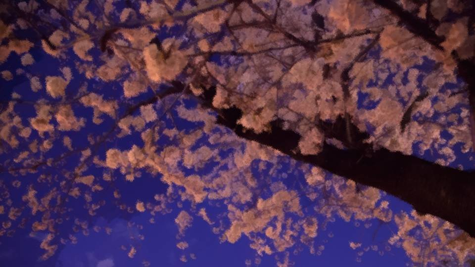

Script 00001B8E

"Ooh! They've finally started blooming for real!"
"Seeing the cherry blossoms on the goshinboku really makes it feel like spring, huh!"
"Looking at the cherry blossoms at night like this makes me want to spread out a fancy boxed lunch!"
"You, I just treated you at Zahha a little while ago!"
"Ah, look! A frankfurter stall!"
"Listen when people talk to you!"
"Seeing the cherry blossoms on the goshinboku really makes it feel like spring, huh!"
"Looking at the cherry blossoms at night like this makes me want to spread out a fancy boxed lunch!"
"You, I just treated you at Zahha a little while ago!"
"Ah, look! A frankfurter stall!"
"Listen when people talk to you!"

"Here, Niimura-senpai! This one's my treat! Frankfurters, they're delicious!"
"Huh? O-okay... thanks... You treating me feels kind of creepy..."
"Also, could you take these three to Kogori-senpai as a present from me?"
"What's with you... Why are you suddenly treating people...?"
"Huh? O-okay... thanks... You treating me feels kind of creepy..."
"Also, could you take these three to Kogori-senpai as a present from me?"
"What's with you... Why are you suddenly treating people...?"
"Well, you'll be looking after me at the Arata settlement soon, so it's just a small token of my feelings."
"Your thanks for us looking after you is a frankfurter, huh... W-well, with this kind of thing it's the thought that counts, yeah."
"Your thanks for us looking after you is a frankfurter, huh... W-well, with this kind of thing it's the thought that counts, yeah."
"But I wonder if Natsumi and her family are home... Seems they're out shopping as a family right now, so these'll get cold."
"Stall frankfurters like these are just reheated anyway, so they'll still taste good later out of the microwave."
"Well, sure, but..."
"Stall frankfurters like these are just reheated anyway, so they'll still taste good later out of the microwave."
"Well, sure, but..."
"Hey, hey, Niimura-senpai, are there lots of cherry trees at the Arata settlement too?"
"There are next to none. This year too, it'll probably just be the one cherry tree at the Niimura main family's house in bloom."
"That's kind of lonely... Oh, then I want to do fireworks!"
"There are next to none. This year too, it'll probably just be the one cherry tree at the Niimura main family's house in bloom."
"That's kind of lonely... Oh, then I want to do fireworks!"
"Fireworks, this time of year?"
"If there aren't many cherry blossoms, then fireworks at least! A night sky where the sights of different seasons meet! Don't you think that's wonderful!?"
"Well, I'm sure it'd be pretty, but you're totally in vacation mode..."
"If there aren't many cherry blossoms, then fireworks at least! A night sky where the sights of different seasons meet! Don't you think that's wonderful!?"
"Well, I'm sure it'd be pretty, but you're totally in vacation mode..."
"N-no, no! I'm going to the Arata settlement following Kogori-senpai's revelation, after all!
I'm serious, perfectly serious!"
"Yeah, yeah, sure... Well, suit yourself."
"Ah! They're selling Super Soda Bomber over there!"
"Whaaat!? Let's go, Goto!"
"I hate that stuff, though..."
"Yeah, yeah, sure... Well, suit yourself."
"Ah! They're selling Super Soda Bomber over there!"
"Whaaat!? Let's go, Goto!"
"I hate that stuff, though..."